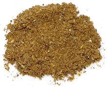

 |
Garam Masala - Tamil NaduIndia - South | ||||
| Makes: Effort: Sched: DoAhead: |
6oz ** 25 min Yes |
Garam Masala is not so much used in South India, and what is used differs substantially from the more familiar Garam Masala of the north and northwest. | |||
| Of course exact formulas vary by household, but what is given here is fairly typical. Tamil Nadu also has another Garam Masala with a lot of fresh curry leaves and some chilis. | |||||
|
50 1 1 1 1/2 ------ 1 1/8 3/8 |
T T T T --- T c oz |
Cardamom pods (1) Cumin seeds Coriander seeds Fennel seeds Fenugreek seeds ------------ Black peppercorns Cloves Cinnamon (2) |
Make: - (25 min)
|